Практичний досвід · журнал «ДентАрт» 2015 №2
Освітлення в дентальній фотографії. Прийоми художньої зйомки
LIGHTING IN DENTAL PHOTOS. TECHNIQUES OF ART PHOTOGRAPHY
Інтерес лікарів до теми дентальної фотозйомки значно зріс. Багато стоматологів перед тим, як придбати власний фотокомплект, хочуть дізнатися про те, на що їхня камера буде здатна: «Чи можна отримувати фотографії, як у красивих журналах?», «Чи виглядатимуть зуби на знімках природно і привабливо?» Зазвичай перед покупкою оцінюється кількість мегапікселів, розмір матриці, якість об'єктива. Усе це важливі аспекти, на які, безумовно, потрібно звертати увагу, однак є один головний секрет для отримання дійсно якісних фотографій, який багато хто випускає з уваги, — світло.
Користувач може мати найдорожчу камеру у світі, але без розуміння основних принципів правильної постановки світла він, найімовірніше, буде розчарований невідповідністю очікуваної якості зображення й отриманого результату.
Однак якщо знати про те, які аксесуари й обладнання використовуються у фотографії для створення освітлення, і володіти технікою їх використання, можна отримувати приголомшливі зображення за допомогою камери найскромніших можливостей.
Сучасна стоматологія немислима без фотографії. Ремесло фотозйомки настільки тісно вплелося в практику лікарів, які займаються різними видами естетичної реабілітації, що тепер вона супроводжує практично кожен клінічний випадок.
І це не дивно. У наш час у зв'язку зі стрімким ускладненням методів стоматологічного лікування і зростаючою потребою у складних естетичних перетвореннях усмішки фотографія набуває дедалі більшого значення. Вона використовується для формування професійного портфоліо, як спосіб комунікації між лікарем і пацієнтом, а також між членами лікарської команди; як основний засіб мотивації пацієнтів тощо.
Фотозйомка в стоматології стала настільки специфічною, складною і багатоцільовою, що її можна сміливо виділити в окремий жанр. Ім'я цьому жанру — дентальна фотографія. Вона поєднує в собі принципи макро- і мікрозйомки, предметної зйомки, портретного фотографування і на цей момент обзавелася цілим набором спеціального обладнання й аксесуарів, які дозволяють найефективніше здійснювати фотореєстрацію в складних умовах порожнини рота.
Для того, щоб успішно працювати в жанрі дентальної зйомки, необхідно мати загальні уявлення про принципи фотографування і про технічну виворотку процесів, що відбуваються. Процес фотозйомки базується на роботі трьох основних технічних вузлів: фотоапарата, об'єктива і спалаху.
Фотоапарат — це, по суті, пристрій для запам'ятовування світла і основний орган управління процесом фотозйомки. Головним елементом фотоапарата є світлочутливий сенсор (матриця), який фіксує світло, що падає на нього.
Об'єктив являє собою певне оптичне середовище, яке дозволяє фокусувати світло на матриці фотоапарата. У дентальній фотографії використовуються спеціальні макрооб'єктиви для того, щоб отримувати зображення в необхідному масштабі.
Третім, і найважливішим, технічним вузлом фотографії є спалах, який дозволяє заповнити об'єкт зйомки необхідною кількістю світла. На цьому елементі ми зупинимося докладніше.
Світло має першорядне значення у фотографії, адже саме воно, відбите від різних об'єктів і потрапивши на матрицю камери, зрештою стає фотографією. Жанр дентальної зйомки передбачає роботу на великих ступенях збільшення, відстань від передньої лінзи об'єктива до зубів при цьому дуже невелика — усього 15-30 см. У дентальній фотографії, як і в будь-якій макрозйомці, для збільшення глибини різкості доводиться встановлювати високі значення (f/20-32), що призводить до максимального закриття діафрагми об'єктива. У таких умовах світлу дуже складно проникнути через об'єктив на матрицю. Використовуючи постійне (потокове) освітлення, яке дають лампи і світильники в нашому кабінеті, ми неминуче будемо отримувати занадто темні кадри. Тому доводиться використовувати спалахи.
На відміну від джерел постійного світла, спалахи дають короткий, але дуже потужний світловий імпульс. Спалах дозволяє отримувати спрямоване, контрольоване світло необхідної інтенсивності для того, щоб потрібним чином освітлювати предмет зйомки.
Типи спалахів і додаткових аксесуарів
У дентальній фотографії існує 5 рівнів складності освітлення з використанням різних типів спалахів і додаткових аксесуарів для роботи зі світлом.
Перший рівень — кільцевий спалах (фото 1). Найпростіший і незамисловатий варіант освітлення в макрозйомці. За рахунок того, що імпульсні лампи кільцевого спалаху розташовуються навколо передньої лінзи об'єктива у формі кола, це дозволяє отримувати добре заповнення світлом при будь-якому, навіть найбільшому масштабі зйомки.
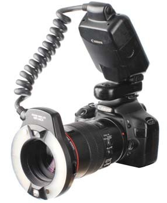
Фото 1. Кільцевий спалах на камері.
Кільцевий спалах простий в управлінні і дозволяє легко отримувати досить хороші результати (фото 2). Також він незамінний при реєстрації оклюзійних фотографій, виконуваних у дзеркалі (протоколювання клінічних випадків лікування жувальних зубів, фотографії всієї зубної дуги тощо) (фото 3).
Основні недоліки кільцевого спалаху — різке безтіньове освітлення з формуванням яскравих відблисків у формі кільця на поверхні зуба. Об'єкти під кільцевим спалахом найчастіше виходять плоскими і невиразними. Недоліки кільцевого спалаху особливо гостро виявляють себе при зйомці передніх зубів.
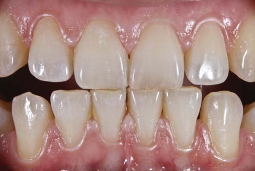
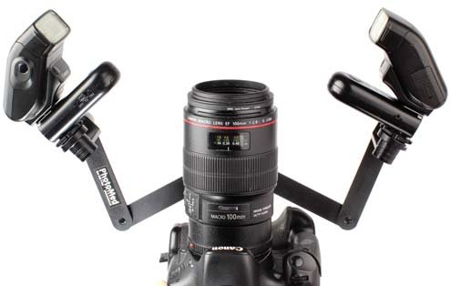
До другого рівня освітлення в дентальній фотографії належать так звані біполярні спалахи (фото 4). Ці пристрої оснащені парними випромінювачами, які кріпляться безпосередньо до переднього краю макрооб'єктива і керуються одним контрольним блоком. Головки спалахів, як правило, можуть нахилятися під різними кутами до об'єкта зйомки. Такий тип освітлення дозволяє отримувати привабливішу форму відблисків, які розташовуються на бічних гранях зубів, не закриваючи собою важливі деталі (фото 5).
Недоліки біполярного спалаху — різке світло, що призводить до формування неприродно яскравих відблисків. Крім того, у дволамподих систем є також обмеження за максимальним масштабом зйомки: при занадто близькому розташуванні макрооб'єктива до поверхні знімального об'єкта світла від спалахів може виявитися недостатньо. При протоколюванні жувальних зубів у великому масштабі одна з ламп біполярного спалаху може потрапити в мертву зону (за щоку, ретрактор або серветку раббердама), що не дозволить отримати кадр достатнього рівня освітленості.
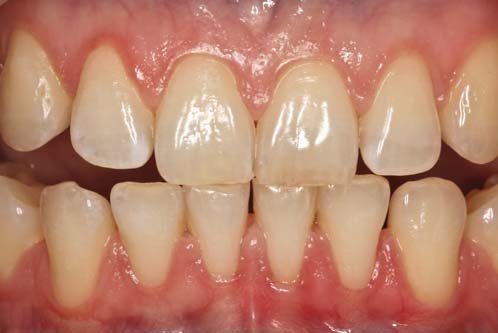
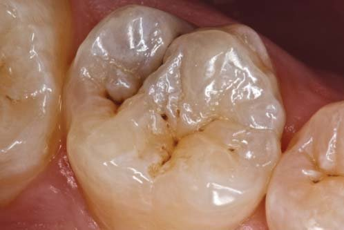
Освітлення третього рівня складності являє собою модифіковану версію біполярного спалаху, випромінювачі якого кріпляться на спеціальному рухомому кронштейні (фото 6). Це дозволяє вільніше конфігурувати положення імпульсних ламп відносно об'єкта зйомки. Крім того, на спалахи можна встановити спеціальні модифікатори світла, які дозволять пом'якшити його яскравість і таким чином отримати привабливішу форму відблисків на зубах.
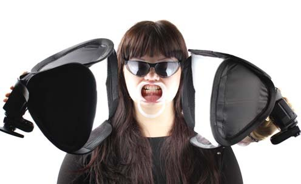
Фото 6. Біполярний спалах на рухомому кронштейні.
До таких аксесуарів належать баунсери і мінідифузори (фото 7). Принцип роботи баунсера полягає в тому, що світло спалаху, потрапляючи на білу поверхню відбивача, частково розсіюється, слабшає і стає м'якшим. Мінідифузори пропускають прямий потік світла через полотно матової тканини, що теж призводить до пом'якшення відблиску (фото 8).
Такий варіант освітлення має потенціал не лише для стандартного фотопротоколювання, а й для отримання художніх фотографій.
Недоліками біполярного спалаху на кронштейні є передусім те, що свобода просторового позиціонування імпульсних ламп обмежена мірою рухомості кронштейна. Така система буде зручною для отримання відмінних знімків у традиційних ракурсах при відносно простих конфігураціях освітлення. Однак для тих, хто захоче піти далі, її можливостей уже буде недостатньо.
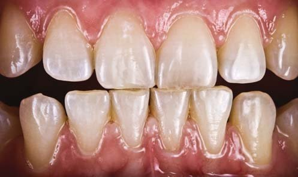
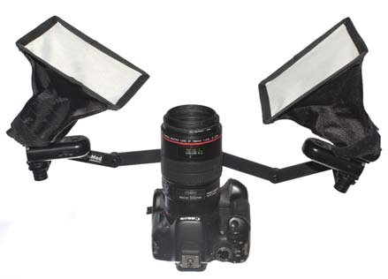
Четвертий рівень складності світла в дентальній зйомці, який відкриває широкі можливості для художнього фотографування і конфігурування найскладніших схем освітлення, — дистанційна біполярна система з мінісофтбоксами (фото 9). Як джерела світла для цієї системи пропонується використання накамерних спалахів з поворотною головкою. Звичайна потужність таких спалахів для дентальної зйомки надлишкова, тому слід зменшити параметр інтенсивності світлового імпульсу до 1/8-1/16 від максимального.
Для з'єднання спалахів з фотоапаратом можна використовувати дистанційні радіосинхронізатори, які забезпечують точну високошвидкісну синхронізацію (близько 1/300 с) на відстані до 100 метрів, або скористатися вбудованим механізмом дистанційного керування, наявним у деяких сучасних камерах. У деяких випадках дистанційний тип з'єднання радше не дозволяє використовувати режим автоматичного заміру експозиції TTL, тому налаштування потужності спалахів необхідно виконувати вручну.
Відсутність кронштейна в такої системи дозволяє досягти максимального ступеня свободи, однак при цьому виникає необхідність в обов'язковій допомозі асистента для позиціонування спалахів у потрібному положенні.
Важливим елементом системи є софтбокси. Саме вони дозволяють отримувати найпривабливішу, художню картинку з красивою формою відблисків на зубах (фото 10).
Недоліки системи 4-го рівня: відсутність автоматичного TTL-контролю, необхідність ручного налаштування потужності спалахів, обов'язкова участь асистента, а також неможливість зйомки оклюзійних фотографій через дзеркало — специфіка цієї системи робить її для цього надто незручною.
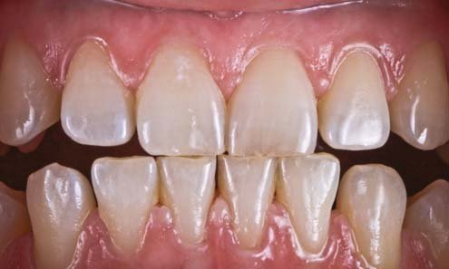
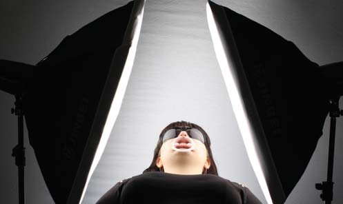
Кілька слів про софтбокси. Одна з головних задач фотографа і художника полягає в тому, щоб вивчити природу світла. Іноді світло буває жорстким і дає при цьому сильний контраст (прямий сонячне світло/спалах), а в деяких випадках світло м'яке і розсіяне (освітлення в похмурий день, денне світло, що падає з вікна).
Софтбокси були розроблені для того, щоб пом'якшити жорстке освітлення від невеликих джерел світла (лампи, спалахи) і знизити контраст відображення тіней і «світлових плям». Як результат, ці модифікатори світла допомагають створити м'яке, природне освітлення для зйомки як людей, так і об'єктів, наприклад зубів (фото 11).
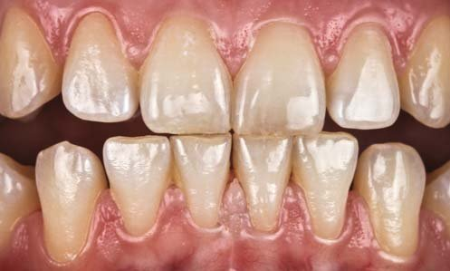
Фото 11. М'яке природне освітлення від софтбокса.
Принцип роботи софтбокса такий: спалах випромінювача відбивається від сріблястих внутрішніх стін, проходить через внутрішню перегородку, а потім через передній екран для розсіювання світла. Саме в результаті того, що дифузія імпульсу проходить через два розсіювальних полотна, виходить м'яке, рівне світло. Відповідним чином змінюється і форма відблиску. Для цієї версії освітлення найкраще підходять невеликі софтбокси розміром приблизно 25×25 см.
Останнім, і найбільш творчо перспективним, є п'ятий рівень освітлення — біполярні спалахи на стійках з великими софтбоксами (фото 12). Як випромінювачі можуть бути використані студійні імпульсні лампи, що живляться від мережі, або ті самі накамерні спалахи, що й на 4-му рівні. Головна відмінність такої системи полягає в тому, що для зйомки використовуються більші софтбокси (50×50 см і більше). Через немалі габарити таких модифікаторів світла асистенту буде незручно тримати їх у руках, тому найкраще закріпити їх на спеціальних стійках.
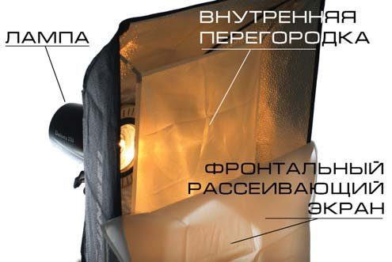
Фото 12. Біполярні спалахи на стійках з великими софтбоксами.
Великі софтбокси дозволяють отримати ще м'якше і розсіяніше світло, вони залишають на зубах приємні «живі» відблиски. За рахунок більшої відстані між внутрішнім і зовнішнім розсіювальним екраном такі модифікатори дають чистіший світловий потік і рівномірно-яскраві світлові плями на поверхні об'єктів. Відображення великого софтбокса на емалі, реставраційному матеріалі або яснах дає можливість передати не тільки оптичну структуру і колір зображення, а й його об'єм, текстуру, рельєф (фото 13).
Хоча смаки в різних фотографів різняться, більшість погодиться з тим, що коли йдеться про освітлювальні прилади, тут діє правило: чим більше, тим краще.
Недоліком системи п'ятого рівня є передусім громіздкість, яка не дозволяє достатньо вільно маніпулювати положенням спалахів. Якщо для зйомки використовуються студійні імпульсні лампи, то це додасть додаткових проводів для підключення їх до мережі. У системі 5-го рівня, так само як і в 4-го, немає можливості робити зйомку в режимі автоматичного контролю експозиції TTL.
Однак попри всі недоліки, тільки системи 4-го і 5-го рівня мають потенціал для отримання по-справжньому високохудожніх фотографій. Заради якості знімків, яку забезпечують модифікатори світла, варто терпіти будь-які незручності.
Для того, щоб успішно використовувати системи освітлення 4-го і 5-го рівнів, необхідно знати загальні принципи роботи із софтбоксами.
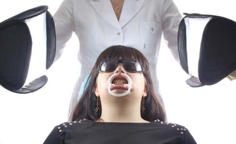
Фото 13. Відображення великого софтбокса передає текстуру і рельєф поверхні зуба.
Чим більший розмір джерела світла, тим більше його відбиття і м'якше світло!
На наступних фотографіях показано схеми освітлення з використанням софтбоксів різних розмірів. Поруч наведено приклади того, як змінюється зображення.
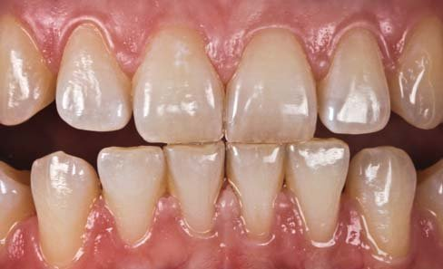
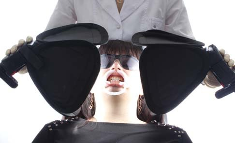
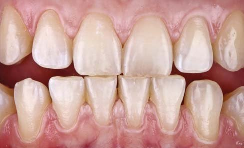
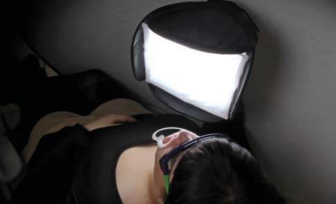
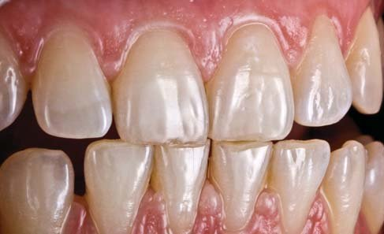
Чим ближче джерело світла, тим більше його відбиття!
Багато хто вважає, що якщо відсунути софтбокс далі від об'єкта, світло вийде м'якшим і розсіянішим. Насправді джерело світла стає меншим і, отже, вищий контраст, тим самим порушується основне правило використання софтбокса. Застосовуючи софтбокс для зйомки, важливо пам'ятати: чим на коротшу відстань від об'єкта ви його помістите, тим м'якшим буде освітлення.
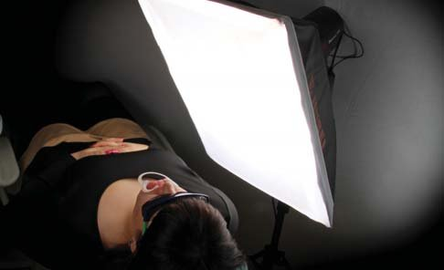
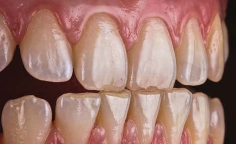
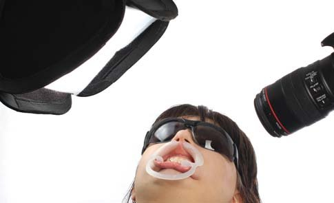
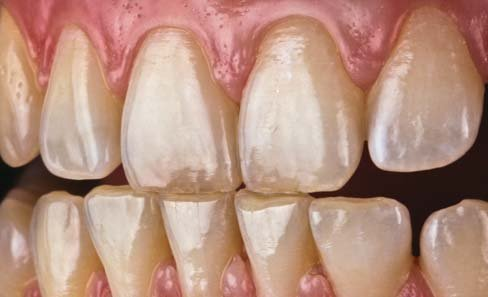
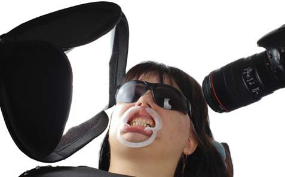
Чим більший кут падіння світла на зуби, тим більше контрастних тіней
Якщо софтбокси розташовані фронтально до обличчя пацієнта, світло від них заповнюватиме всю порожнину рота, практично не залишаючи тіней. Зображення в такому разі вийде занадто м'яким і світлим.
Якщо спалах розташувати сагітально і під великим кутом до поверхні, світлові плями зміщуються на бічні грані зубів і найбільш виступні деталі рельєфу. Тіні при цьому стануть контрастнішими. При такій конфігурації розташування спалахів краще проглядається текстура поверхні.
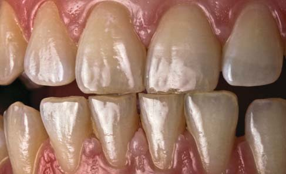
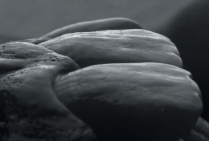
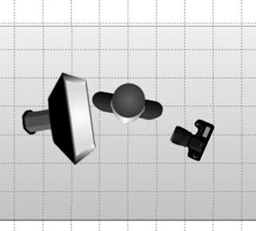
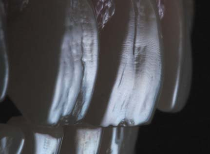
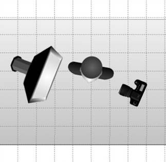
Змінюючи схему розташування джерел освітлення, ми можемо отримувати картинку тієї якості, яка нам потрібна, підкреслювати саме ті деталі знімального об'єкта, на які ми хочемо звернути увагу.
Художня фотографія
Попри наявні думки про те, що головною і єдиною метою стоматологічної фотографії має бути передача достовірної інформації про зовнішній вигляд і стан органів порожнини рота; попри те, що багато фахівців схильні зводити суть дентальної зйомки до сухого фотопротоколювання, інтерес лікарів дедалі більше звертається у бік художньої дентальної фотографії.
Художня фотографія переступає через обмеження, перетворюючись зі способу відображення клінічної дійсності на справжнє мистецтво. Головна відмінність художньої зйомки — це її місце в нашому стоматологічному житті. Такі фотознімки робляться для того, щоб викласти їх на спеціалізованих інтернет-майданчиках для демонстрації свого професійного рівня; для публікацій у друкованих виданнях і на обкладинках журналів; як матеріал для навчальних програм тощо.
Тим, хто захоплений фотографією і прагне поліпшити якість своїх знімків, слід знати, що для створення подібних робіт не потрібна якась надто дорога професійна техніка. Усе, що необхідно, — це розуміння особливостей поведінки світла. Потрібно знати, яким саме способом можна досягти потрібного освітлення, як слід розташувати джерело світла відносно об'єкта зйомки і який при цьому обрати ракурс.
У художній фотографії допустимі прийоми, що перебувають за межами класичної дентальної зйомки. Основним інструментом, як і раніше, залишається софтбокс.
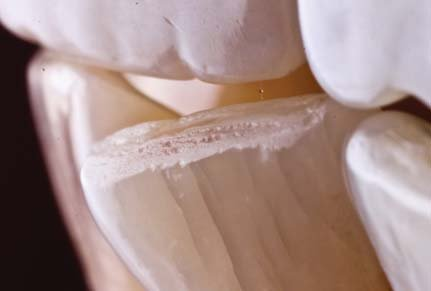
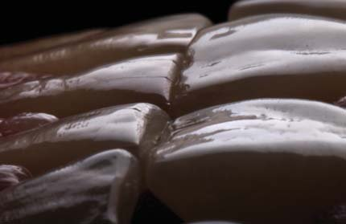
Естетику часто можна побачити в найбуденніших речах — важливо навчитися бачити прекрасне крізь пелену рутини.
Контрове освітлення
Контрове світло — освітлення у фотографії, при якому джерело світла розташовується позаду об'єкта зйомки на близькій відстані від нього. Таке освітлення дає лінію світлового контуру, яка може розширюватися при збільшенні інтенсивності або віддаленні джерела світла від об'єкта. Джерело не обов'язково має перебувати рівно позаду об'єкта, воно може бути трохи зверху або збоку, але воно завжди ззаду. За допомогою контрового освітлення можна найбільш детально передавати фактуру поверхні зуба і його мікрорельєф.
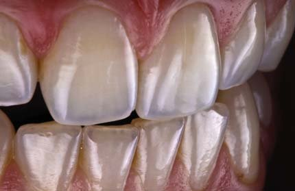
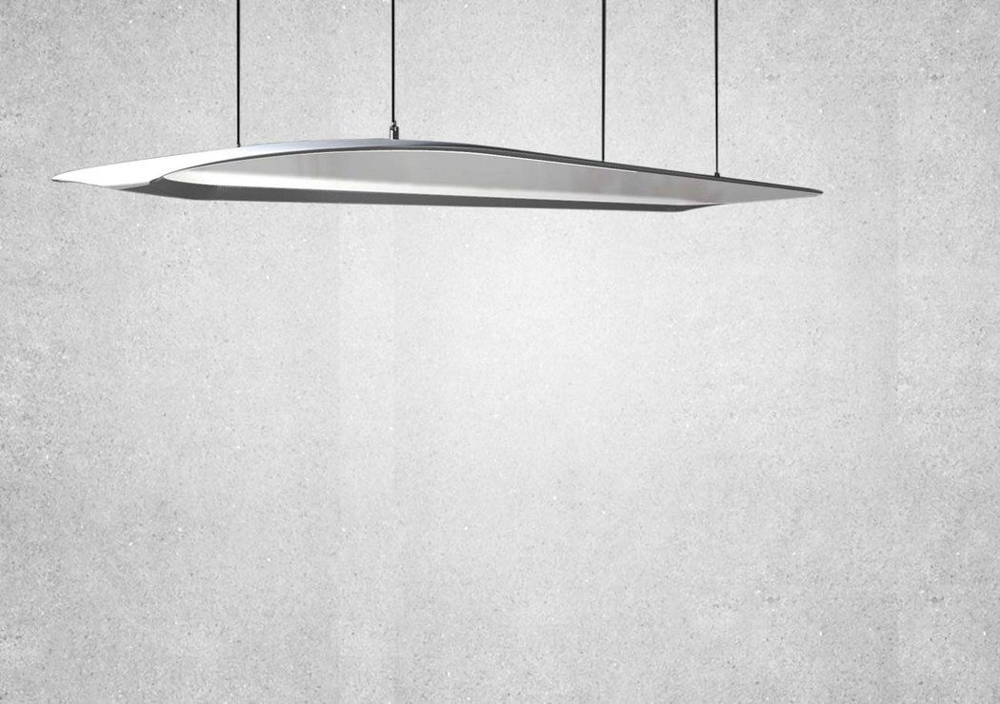
Головне правило успішного освоєння фотомистецтва — якомога більше практикуватися й експериментувати. Не слід піддаватися косності, потрібно завжди бути відкритим для вільної творчості. Процес фотографування неймовірно цікавий, адже при найменших змінах положення спалахів або голови пацієнта кадри виглядають уже по-іншому. Іноді випадковий збіг обставин призводить до отримання найбільш незабутніх кадрів.
Щоб знаходити цікаві об'єкти для дентальної зйомки, не потрібно чекати появи якогось унікального клінічного випадку. Естетику часто можна побачити в найбуденніших речах: цікавий мікрорельєф на зубі, тріщини на стертому ріжучому краї, нестандартні емалеві формації жувальних горбів тощо. Якщо кожен стоматолог навчиться бачити прекрасне крізь пелену рутини, тоді всі ми почнемо ставитися до своєї роботи по-особливому. І головним інструментом на шляху пізнання естетики є фотографія!
Література
- Bryan Peterson — Understanding Close-Up Photography: Creative Close Encounters with Or Without a Macro Lens. Amphoto Books, 2013.
- Геннадий Михеев. Светопись и светописцы. Занимательное чтиво для увлеченных фотографией. Интернет-издание.
- The Canon Camera Book Volume 1.
- Арена Сил. Настольная книга спидлайтера. Peachpit Press, 2013.